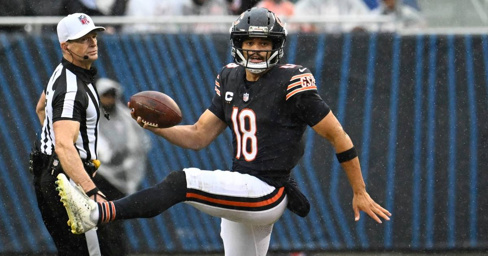

Bears Fend Off Patriots 30-24 on Thursday Night
Cairo Santos went from a 53-yarder off the upright to a career-long 58-yard dagger with 1:34 left as the Bears held off the Patriots 30-24 — and Caleb Williams won the 2024 draft-class rematch.

Disclosure: this post contains affiliate links. I earn a commission on qualifying purchases.
The finish
Cairo Santos missed a 53-yarder off the upright — then came right back and drilled a career-long 58-yard field goal with 1:34 left to seal a 30-24 Thursday Night Football win over the Patriots at Soldier Field.
That's the kind of swing you only get from a kicker with a short memory.
The QB duel
The 2024 draft-class rematch went to the No. 1 pick. Here's how the numbers stacked up:
Caleb Williams (CHI): 308; 2; 0
Drake Maye (NE): 321; 2; 1
Maye actually outgained Williams through the air and added a rushing touchdown, but the Bears got the decisive stop-and-kick sequence when it mattered.
The takeaway
Chicago's defense forced the issue late, Santos answered the miss, and the Bears banked a primetime win over a Patriots team that had no business being dismissed. Two young quarterbacks, one career-long kick, one two-score margin.
Read the full breakdown: Thursday Night Football: Bears fend off Patriots 30-24 (NBC Sports) and the live Bears-Patriots score and highlights thread (USA Today).
Watch
Source: New England Patriots vs Chicago Bears Game Highlights | 2026 NFL Season Week 7 — NFL's official channel. Full game highlights from the Thursday Night Football matchup, including the key scoring plays on both sides.
Gear up: Fanatics